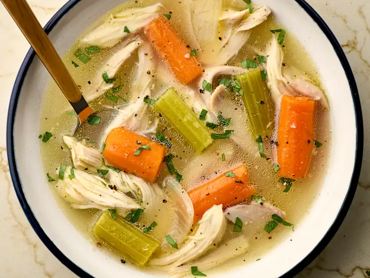

Chicken Soup

Description
Learn how to make a filling and flavourful chicken soup using a whole chicken.
Ingredients
- 1 3-5 pound whole chicken
- 2 large yellow onion, cut into large pieces
- 3 large carrots, cut into large pieces
- 5 celery stalks, cut into large pieces
- 1 bunch of parsley
- 1 bay leaf
Steps
- Remove the whole chicken from its packaging, drain off any liquid and pat dry with paper towels. Leave the skin on the chicken but trip away any large pieces of fat from around the neck or cavity of the chicken. Place the whole chicken in a large soup pot and add enough water to cover by about an inch.
- Keep your eye on the pot as it comes to a boil, and then reduce the heat to low and partially cover the pot as soon as the water is boiling.
- For the first half hour or so, you'll see foam and scum collecting on the surface of the liquid. As it clumps together, skim it off with a spoon and discard.
- Keep the pot partially covered and at a low simmer. You should see slow but steady bubbles and wisps of steam coming from the pot (although don't reduce the temperature so low that the water falls below 165°F or else the chicken won't cook through). Add more water as needed to keep the chicken covered, or if it floats, to allow it to bob in the liquid.
- The chicken is ready as soon as the meat registers 165°F and easily falls off the bone, after about 1 1/2 hours, but you can continute simmering for up to 3 hours for a richer flavour – just keep an eye out that the chicken doesn't start to disintegrate or turn the soup cloudy. Add extra water as needed to keep the chicken covered.
- Roughly one hour before you plan to finish the soup, add all the vegetables, 1 bay leaf, a handful of fresh parsley stems, and any optional extras to the pot.
- Use tongs to pull the chicken and vegetables out of the liquid and transfer to a cutting board.
- Pour the cooking liquid – now brother – through a strainer into a large mixing bowl.
- Return the broth to the soup pot and bring to a simmer over medium-low heat.
- Chop the vegetables into bite-sized pieces. The vegetables will still be quite hot, so handle with care. When the chicken is cool enough to handle, pull the meat off the chicken bones, discarding the skin and bones. Shred or chop the meat into bite-sized pieces. Discard the bay leaf and parsley stems. Return the chicken and chopped vegetables to the broth, and warm.
- Give the broth a taste, and then season with a few teaspoons of salt and a few grinds of black pepper. Taste again and add more salt or pepper if needed.
- Ladle the soup into bowls and garnish with chopped fresh parsley.
Home